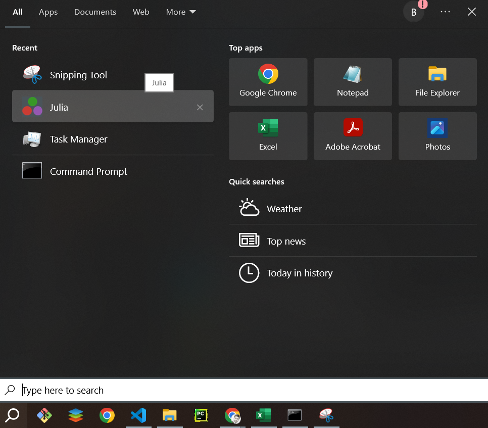
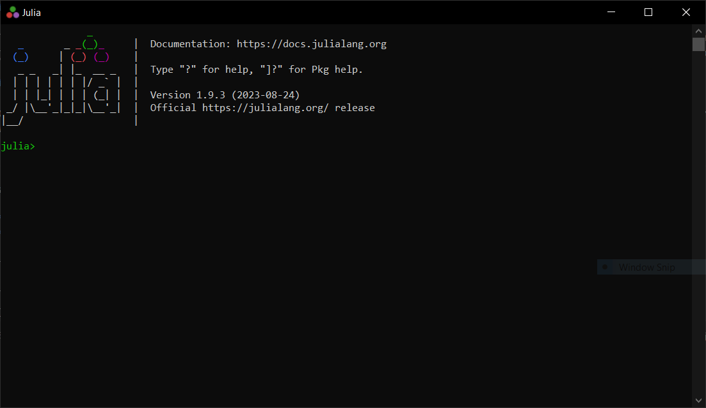

Course Preparation
Throughout this workshop, we will use the Julia Programming Language and the Pluto module as our programming environment. Let's install these tools on our computers.
Installing Julia
Install the latest version of Julia which can be downloaded at the Julia Downloads page. It is advisable you add julia to the PATH, which can be done during the installation process.
Once Julia is installed, open the Julia REPL (this process differs depending on your operative system). For instance, in Windows you can found and run the Julia executable and then the Julia REPL will show up:
There are many tutorials on the internet for programming in the Julia language. We recommend you refer to the official tutorials or this simple beginner tutorial."
Installing Pluto
When working with Julia, you will need to install some modules. In Julia it's necessary to open a Package Manager Session for doing so. During this workshop, we will use the Pluto module as the development environment. Let's add this module.
In the Julia Session (characterized by the julia> prompt), type the ] character to bring up the Package Manager Session (characterized by the pkg> prompt):
, then add the Pluto package by typing add Pluto and press enter:
To go back to the Julia Sesssion, simply press the backspace button:
Programming in Julia with Pluto
Just for testing purposes, let's create a simple Julia script in the Pluto environment. First, in a Julia Session import the Pluto module with the using Pluto command, and then launch it with the Pluto.run() function:
julia> using Pluto
julia> Pluto.run()A window of your default browser will show up:
You can scroll down this page to see some Pluto Notebook examples. However, let's continue by clicking on + Create a new notebook and an empty Pluto Notebook, an environment for programming in Julia, will be displayed:
Feel free to messing around with options and buttons in the Pluto Notebook. There are lots of tutorials and resources on the Internet for using Pluto, we recommend you to read at least this tutorial.
Write the following in your Pluto Notebook and run it (this example is taken from here):